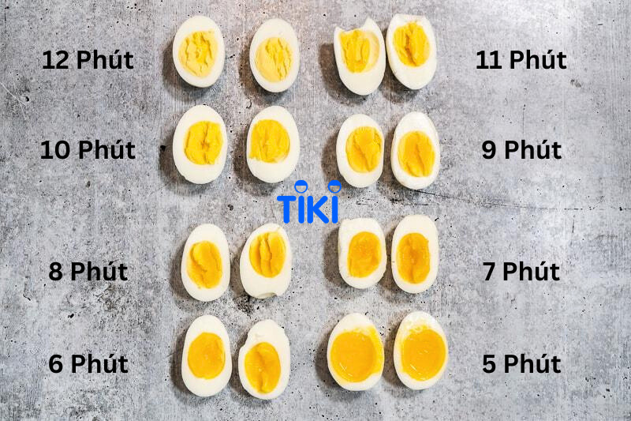

- First, place the eggs in a pot and fill it with enough water to cover the surface of the eggs.
- Next, turn on the gas or electric stove to heat the water in the pot until it reaches a rolling, bubbling boil.
- After that, reduce the heat to low and let the eggs cook in the boiling water for about 10-12 minutes for large-sized eggs.
- Finally, pour out the hot water and switch to pouring cold water over the boiled eggs until they are completely cool.
